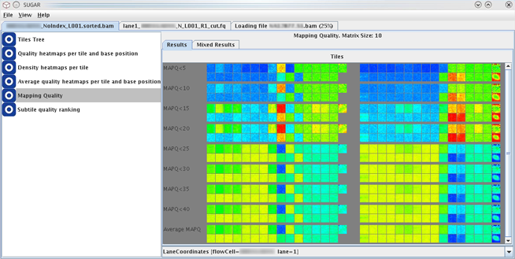

This module generates heatmaps to show an overview of mapping quality (MapQ) scores across the all tiles in the flowcell. The analysis is applied for data of mapped-SAM/BAM files, in which the MapQ scores of the sequence reads are provided.
A series of mapping quality heatmaps shows proportion of low-MapQ reads per all reads, of which the threshold values of low-MapQ score are specified as MAPQ < 5, MAPQ < 15, MAPQ < 25, and MAPQ < 35. In addition, an average MapQ heatmap is shown at the bottom of the view.

Mouse clicking on each tile on the heatmap opens popup view of the selected tile and its neighboring tiles (see below). This window allows more detailed evaluation of the selected tile and closer regions. The legend of the coloring is shown beside this detaied heatmaps.
The MapQ heatmaps are colored according to the proportion of reads that show MapQ scores less than the given theshold (e.g., MAPQ < 5, MAPQ < 10, etc.) of the given subtile (XY-region represented by the heatmap point). The coloring is under a linear paint scale in the Java implementation with the following color boundaries.
The heatmaps of the proportion of low-MapQ reads:
The heatmaps of the average MapQ: